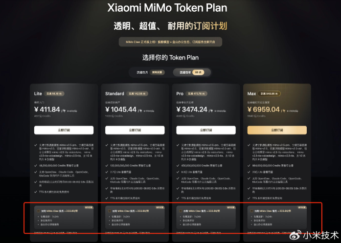
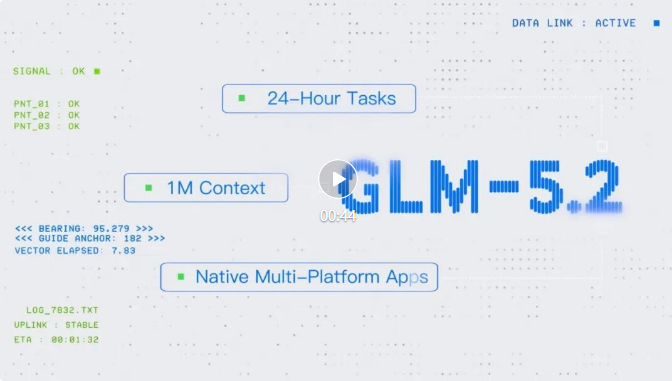
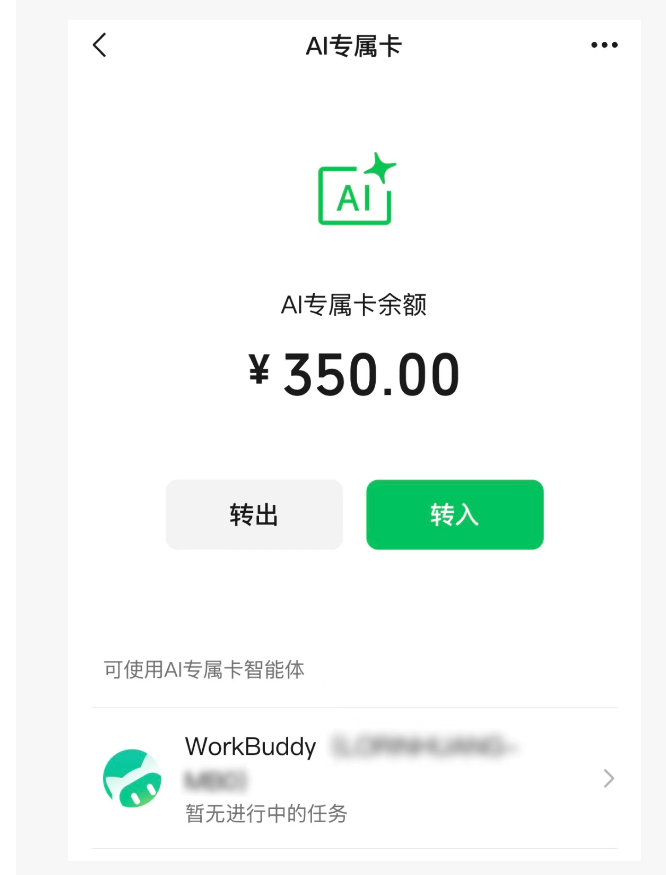

AI Daily: Xiaomi Open-Sources MiMo Code; JD MALL Deploys First Humanoid Robots; Google Unveils DiffusionGemma
Welcome to AI Daily — your daily briefing on the world of artificial intelligence.
Explore new AI products: https://app.aibase.com/zh
1. Xiaomi open-sources MiMo Code, a terminal AI coding assistant equipped with a free, premium multimodal model.
Xiaomi has open-sourced MiMo Code V0.1.0, a terminal AI coding assistant built on the OpenCode architecture. It incorporates a free premium multimodal model and enables thousands of sequential tool invocations.

📌 🔓 Xiaomi open-sources MiMo Code, supporting thousands of sequential tool invocations. 💻 Built on OpenCode architecture with an integrated multimodal model.
2. JD MALL deploys its first humanoid robots.
JD MALL's first humanoid robots have been deployed for shopping guidance, delivery, and service tasks, enhancing retail operational efficiency.

📌 🤖 JD MALL deploys first humanoid robots. 🛒 Tasks include shopping guidance, delivery, and service operations.
3. Google unveils DiffusionGemma: fusing diffusion models with Gemma architecture.
Google has released DiffusionGemma, combining the generative power of diffusion models with Gemma's lightweight architecture.

📌 🧠 Google unveils DiffusionGemma. 🔬 Unites diffusion models with Gemma's lightweight architecture.
4. Apple ships Xcode 26.6.
Apple has released Xcode 26.6, adding support for Google Gemini as a coding assistant.
5. Meituan launches 'AI for Small Shops' initiative in Beijing.
Meituan's 'AI for Small Shops' initiative has been launched in Beijing, aimed at helping small and medium-sized food-service businesses enhance operational efficiency.
6. OpenAI issues restricted release of GPT-5.6.
OpenAI has revised its GPT-5.6 release strategy amid federal regulatory scrutiny, limiting availability to a select group of partners.
7. Mistral AI unveils the OCR4 model.
Mistral AI has introduced OCR4, a model supporting 170 languages, with output quality exceeding GPT and Gemini.
8. Adobe announces acquisition of Topaz Labs.
Adobe has announced the acquisition of Topaz Labs, a video and image AI model developer, further strengthening its Firefly ecosystem.